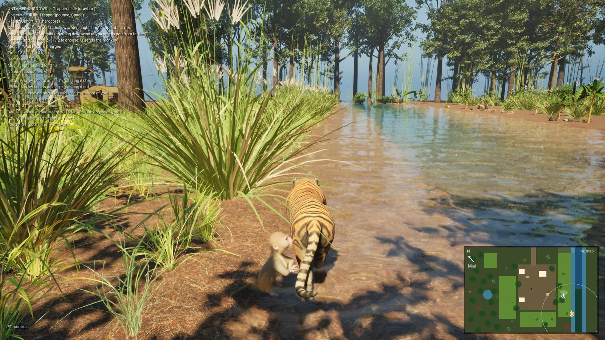
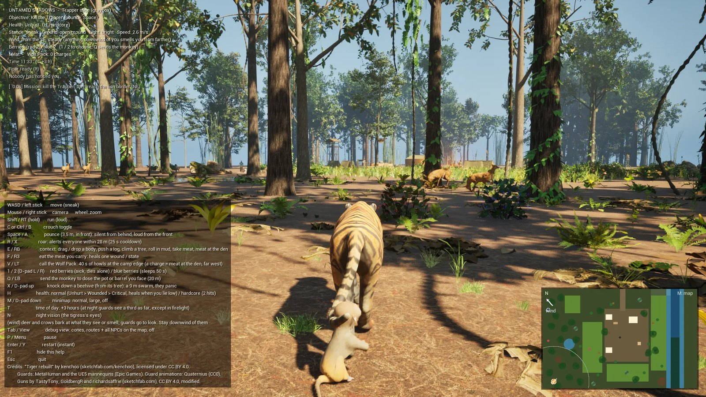
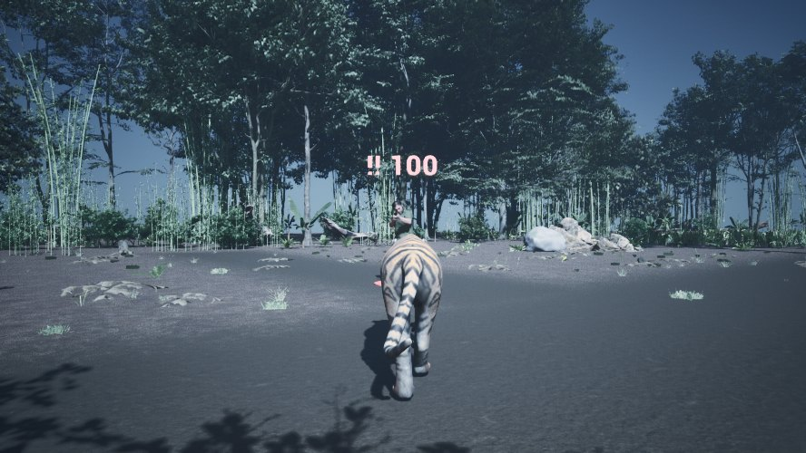

A third-person stealth game in Unreal Engine 5. You play a tigress hunting the poachers who took her cub, with a monkey companion who poisons their food. Each target is a small puzzle with many ways in.
Guards and animals notice you by sight, light, sound and smell. Wind carries your scent, so anything downwind smells you from farther away, and rolling in mud masks it for a while. Deer and crows raise the alarm at what they see or smell, and guards go to look. Night favours the tigress, rain dulls the guards, and firelight gives them their eyes back.
You have a few tools. Red berries make a guard sick and blue ones put him to sleep, and the monkey can slip either into a pot or barrel from 20 metres. Knock down a beehive and the swarm sends guards running. Call the wolf pack to howl at the camp's edge, or roar to alert everyone within 28 metres. A pounce is silent from behind and loud from the front. There are two health modes: normal, and hardcore, where two hits kill you.


It started as a top-down grey-box of the first mission in the browser, built to tune the stealth loop before any of it went into Unreal: vision cones, suspicion, scent and wind, mud, the monkey, the dog and every tool. The Unreal level keeps the same layout, and its minimap is that same map. The prototypes are playable in the browser, best with a keyboard: level 1, the Trapper, level 2, the Sharpshooter and the world map.
The whole world is planned the same way, as a map you can walk before it is built.
The stealth rules live in an engine-agnostic C++20 library with its own test suite of 90 test cases: perception, suspicion, light, scent, wind, poison, bodies and the monkey's rules. Unreal loads it as a plugin, so the rules can be tested and changed without the editor.
On top of it the Unreal game layer is C++ with thin Blueprints, and all tuning numbers sit in Data Assets. It covers the tigress and her input, the HUD and minimap with wind, day and night with night vision, weather from clear to heavy rain that changes sight, scent and noise, and wildlife: deer, crows, peafowl and vultures, with alarm calls.

Tiger: "Tiger rebuilt" by kenchoo (Sketchfab), CC BY 4.0. Guns by TastyTony, GoldbergR and richardsaffrie (Sketchfab), CC BY 4.0, modified. Guards: MetaHuman and UE5 mannequins (Epic Games), animations by Quaternius (CC0).